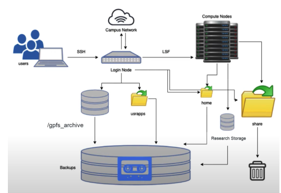

1 HPC Terminology
2 00. HPC Fundamentals
Modern bioinformatics has outgrown the desktop computer. A single human genome contains 3 billion base pairs and generates hundreds of gigabytes of raw sequencing data. Aligning these reads, calling variants, assembling genomes, or training machine learning models for protein structure prediction often require specialized hardware and software. Tasks that would take weeks on your personal computer can complete in hours on a high-performance computing (HPC) cluster. Understanding HPC is no longer optional—it’s essential for doing bioinformatics at scale. This workshop will introduce you to the Hazel HPC cluster and give you the skills to leverage these powerful resources for your research.
2.1 HPC Terminology
2.1.1 What is a “Cluster”
A computer cluster is a set of loosely or tightly connected computers (Nodes) that work together so that, in many respects, they can be viewed as a single system. Computer clusters have each computing unit set to perform the same/similar tasks, controlled and scheduled by software.
2.1.2 CPU vs GPU
- CPU – Central Processing Unit
Think of a CPU as a small team of highly skilled experts. Each core can tackle complex, diverse tasks independently and make sophisticated decisions.
- A CPU can never be fully replaced by a GPU
- A computer can’t function without a CPU
- Can be thought of as the taskmaster of the entire system, coordinating a wide range of general-purpose computing tasks
- Optimized for sequential processing
- Generally between 8-64 cores
CPUs handle most bioinformatics workflows like alignment and variant calling
- GPU – Graphics Processing Unit
A GPU is like having thousands of workers who can all do the same simple task simultaneously.
- GPUs were originally designed to create images for computer graphics and video game consoles
- GPGPU (General-Purpose computing on Graphics Processing Units)
- Performing a narrower range of more specialized tasks
- Excels at highly parallel processing (many calculations simultaneously)
- GPU is like the turbo boost to a car’s engine, the CPU
- Not all computers have GPUs
- Thousands of cores
GPUs excel at deep learning tasks like protein structure prediction
<img src="https://raw.githubusercontent.com/DelilahYM/ImageHost/master/CPUGPU.png" alt="CPU-GPU" width="60%"/>2.1.3 Node vs. core
A node is a single, self-contained computer in the cluster, connected to the others via a high-speed network. Each node has a number of computing units, cores.
2.1.3.0.1 Node – The complete Workstation
A node is an entire computer within the HPC cluster. Think of a node as a complete office workspace with everything needed to function independently. Each node contains:
- One or more CPUs (each with multiple cores)
- Memory (RAM)
- Storage connection
- Network connection to other nodes
2.1.3.0.2 Core – The Individual Worker
A core is a single processing unit within a CPU. It’s the fundamental unit that executes instructions. Think of a core as one individual worker who can complete tasks.
- Modern CPUs contain multiple cores (typically 8-64 cores per CPU)
- Each core can run its own thread of execution independently
- More cores = more tasks can run simultaneously
- Example: A 32-core CPU can theoretically run 32 different calculations at the same time
2.1.3.1 Why is this important?
Single-node jobs: Your program uses multiple cores on ONE node
- Faster communication between cores (they share memory)
- Limited by one node’s resources (if a node has 32 cores and 128GB RAM, that’s your max) Example: Most alignment tools (BWA, STAR) run on a single node
Multi-node jobs: Your program uses cores across MULTIPLE nodes
- Access to more total resources (hundreds of cores, terabytes of RAM)
- Slower communication (data must travel over network between nodes)
- Only works if your software supports it (needs MPI or similar) Example: Large-scale genome assembly, distributed machine learning
Note: Not all programs can utilize CPU cores allocated across nodes. Please check your program’s specifics before submitting jobs. For instance, tools like BLAST can use multiple cores on one node, while MPI-based programs like distributed genome assemblers can span multiple nodes

2.1.4 Memory vs Storage
The central processing unit (CPU) of a computer is what manipulates data by performing computations. In practice, almost all computers use a storage hierarchy, which puts fast but expensive and small storage options close to the CPU and slower but less expensive and larger options further away. Generally the fast volatile technologies (which lose data when off power) are referred to as “memory”, while slower persistent technologies are referred to as “storage”.
2.1.4.1 Memory (RAM - Random Access Memory)
- Small - Typically 16-512 GB per node on HPC systems
- Fast - Nanosecond access times; data transfer at 100+ GB/second
- Expensive - Costs significantly more per GB than storage
- Volatile - All data is lost when the computer powers off or your job ends
Purpose: Memory is your active workspace. When your program runs, it loads data from storage into memory where the CPU can access it extremely quickly. Think of memory as your desk surface—limited space, but everything is immediately at hand.
What lives in memory:
- Currently running programs and their instructions
- Data being actively processed (sequence reads being aligned RIGHT NOW)
- Intermediate calculations
- Variables and temporary results
2.1.4.2 Storage (Disk - Hard Drives or SSDs)
- Large - Terabytes to petabytes on HPC systems
- Slower - Millisecond access times; data transfer at 1-10 GB/second
- Cheaper - Costs much less per GB than memory
- Non-volatile - Data persists even when powered off
Purpose: Storage is your filing cabinet. It holds all your data long-term: raw sequencing files, reference genomes, analysis results, scripts, and software. You can’t work directly from storage—data must be copied into memory first.
What lives in storage: - Raw data files (FASTQ, FASTA) - Reference genomes and annotations - Final analysis results (BAM, VCF, counts tables) - Your scripts and programs - Everything you want to keep after the job finishes
Think of Memory (RAM) as your desk surface—fast, small, and used for what you’re actively working on. Storage (Disk) is your filing cabinet—slower, massive, and where you keep everything long-term.
For example: A typical RNA-seq alignment might need 32GB of memory but only 5GB of storage for the final BAM file

2.2 Hazel Overview
Hazel is a shared computing cluster at NC State, designed to allow many researchers to run computationally intensive analyses simultaneously. Understanding its architecture will help you use it efficiently and avoid common mistakes.
2.2.1 Hazel HPC Structure

2.2.1.1 1. Login Nodes - Your Gateway to HPC
- What they are: Special computers that you connect to via SSH from your laptop
- Purpose: Entry point to Hazel; where you prepare your work, write scripts, organize files, and submit jobs
- What you CAN do: Edit files, organize directories, install software, submit jobs to the scheduler, check job status
- What you CANNOT do: Run computationally intensive analyses
⚠️ CRITICAL RULE: Do not run jobs on login nodes! Login nodes are shared by everyone logging into Hazel. Running analyses here slows down the system for all users and may get your account suspended. Think of login nodes as the lobby of a building—you check in here, but you don’t set up your lab equipment in the lobby.
2.2.1.2 2. Compute Nodes - Where the Real Work Happens
- What they are: Hundreds of powerful computers, each with many CPU cores and large amounts of memory
- Purpose: Execute your analyses (alignments, assemblies, variant calling, etc.)
- Access: You never directly log into compute nodes; the scheduler assigns them to your jobs
- Resources: Each node typically has 32-64 cores and 128-512 GB of RAM
2.2.1.3 3. Scheduler (LSF) - The Traffic Controller
- What it is: Software that manages all job submissions and resource allocation
- Purpose: Ensures fair resource distribution among all users; prevents conflicts
- How it works:
- You submit a job with resource requirements (cores, memory, time)
- LSF queues your job
- When resources become available, LSF assigns your job to appropriate compute nodes
- Your job runs on those nodes until completion
2.2.1.4 4. Storage (Filesystems) - Where Everything Lives
- Multiple storage systems, each optimized for different purposes
- All compute nodes can access these filesystems
- Your data stays in one place; compute nodes read from and write to these shared filesystems
2.2.2 Overview of the Storage in Hazel
This is a summary from the information found here.
Home directory (1G per user,
/home/[UnityID]): store here only small scripts and configuration files.Scratch (20Tb per group, 30 day expiration,
/share/\$GROUP/$USER): This is the place for pipeline intermediate files or as a temporary storage in case you run out of storage anywhere else (i.e. .conda/pkgs and other installation side products). Because of its high speed and temporary nature, this is the recommended place to run jobs and store large intermediate files that are generated during the analysis (e.g., alignment temporary files)Applications (varied size per group,
usr/local/usrapps/$GROUP): Our conda environments, containers, and other software will live here.Note: Can’t write to it from a compute node (it also won’t make an error file when it tries and fails), only from head node; but a compute node can read from usrapps.
Research storage - RS1 (40Tb per project; individual:
/rs1/researchers/[letter]/[name]; project:/rsstu/users/[letter]/[projectname]): Data for alive projects must be stored here. All scripts and cloned GitHub repositories with pipelines must be stored here too. RS1 documentation can be found here.Note: No network problems. The protocol that scratch uses is different from RS1, hard drives are mounted with a specific protocol. Technically RS1 is slower if you have small files running parallel, scratch is better for that. Every PI gets one project. As you get any funded projects you can request another project space, with up to 40Tb. If you lose the grant you lose the free project space. Or you get more space on your original project.
2.2.2.1 Recommendation:
Store your raw FASTQ files in RS1, run analyses using Scratch for intermediate files, and copy final results back to RS1